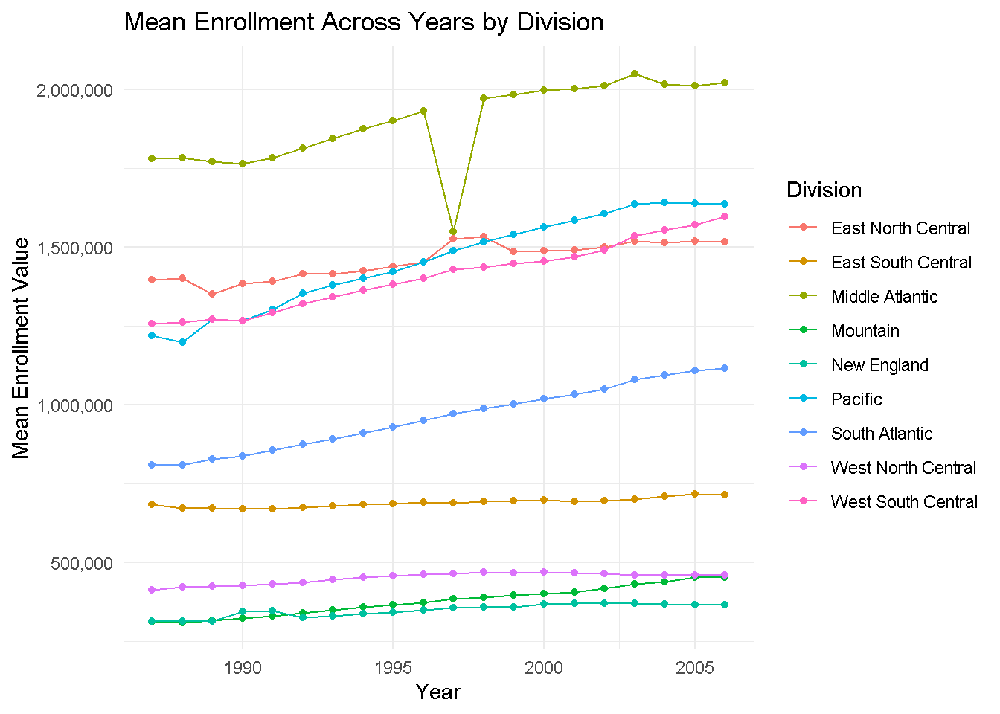
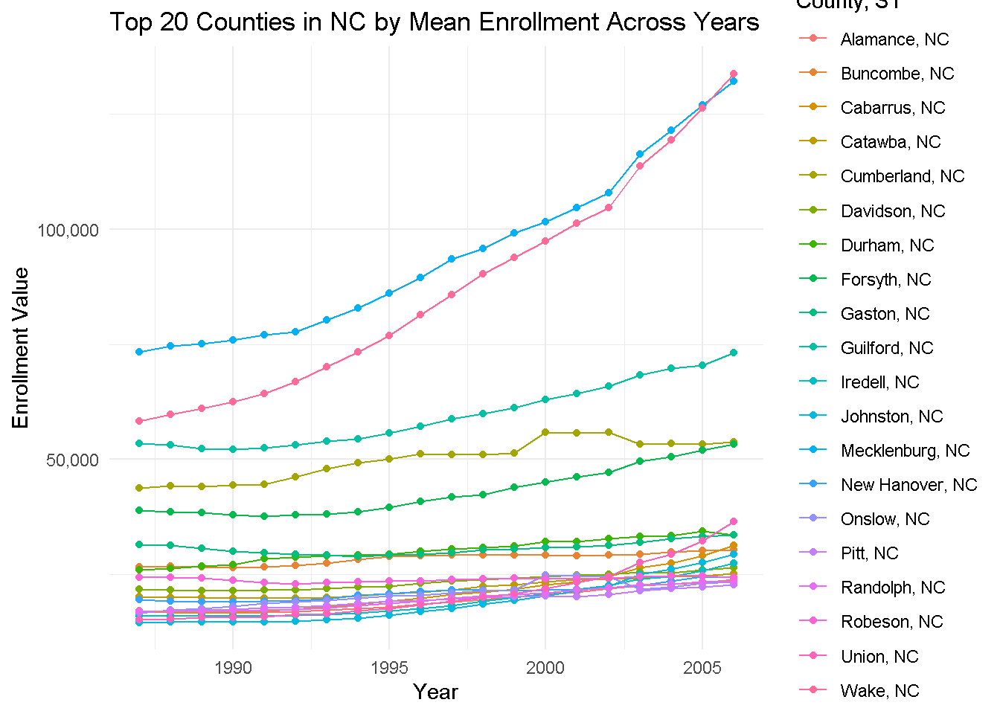
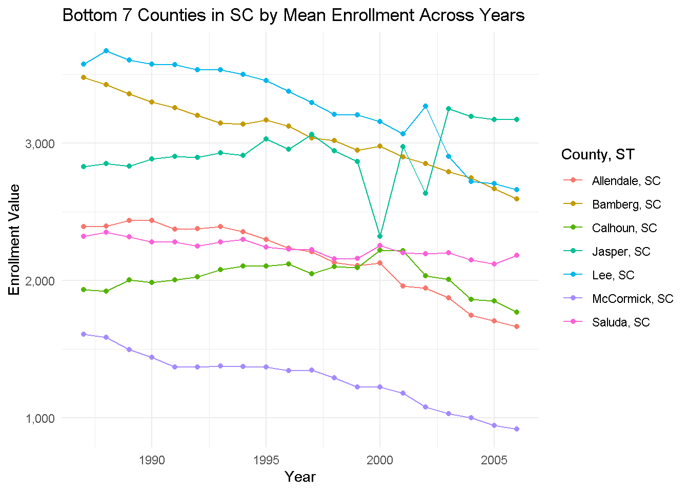
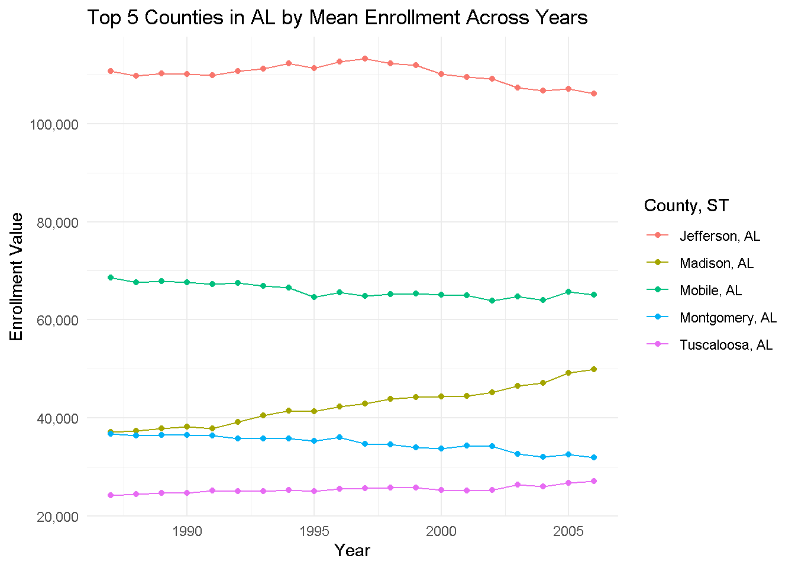
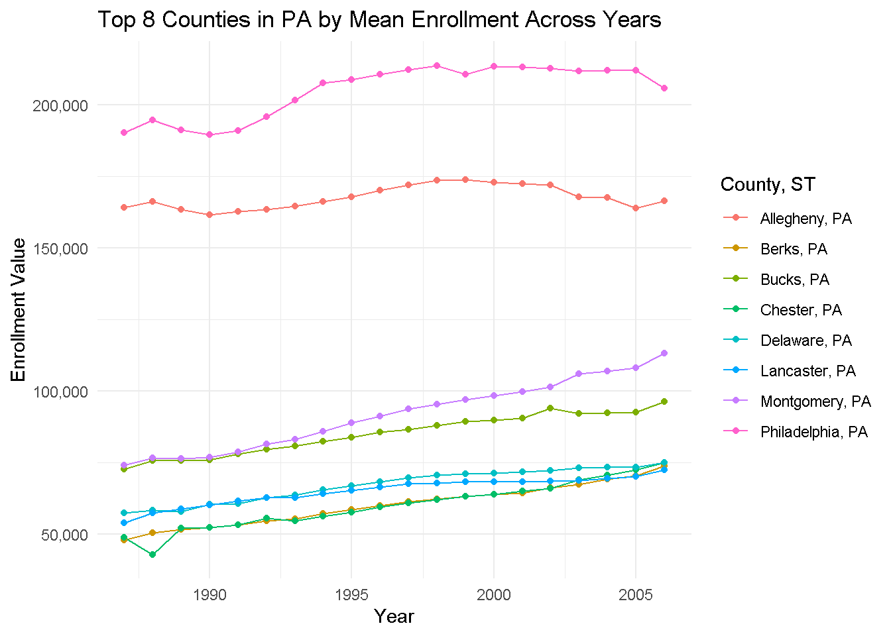
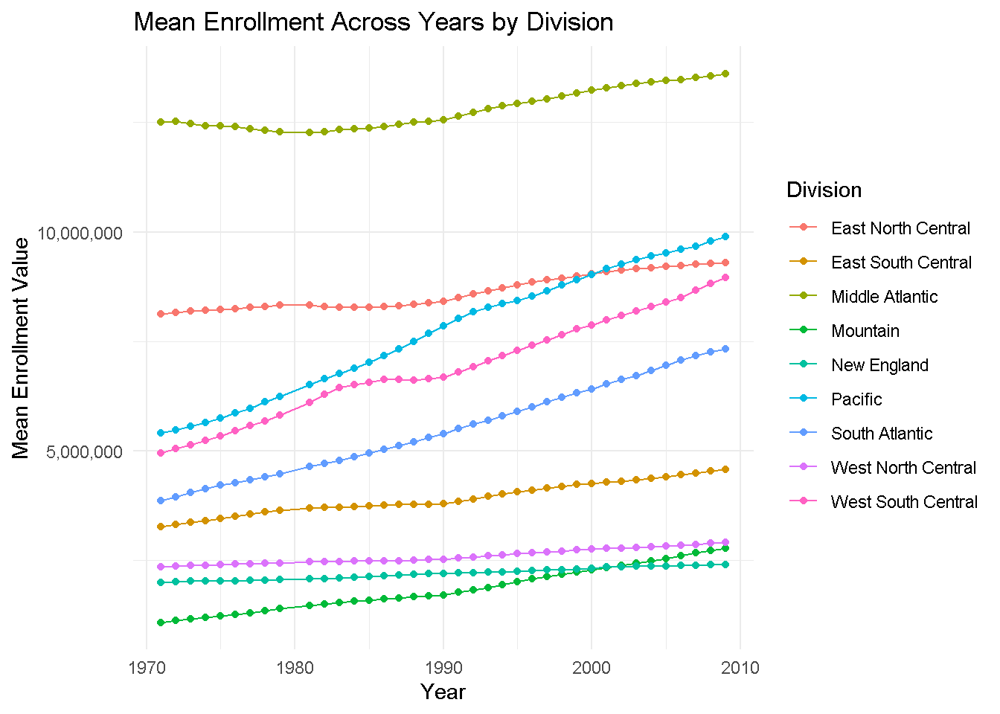
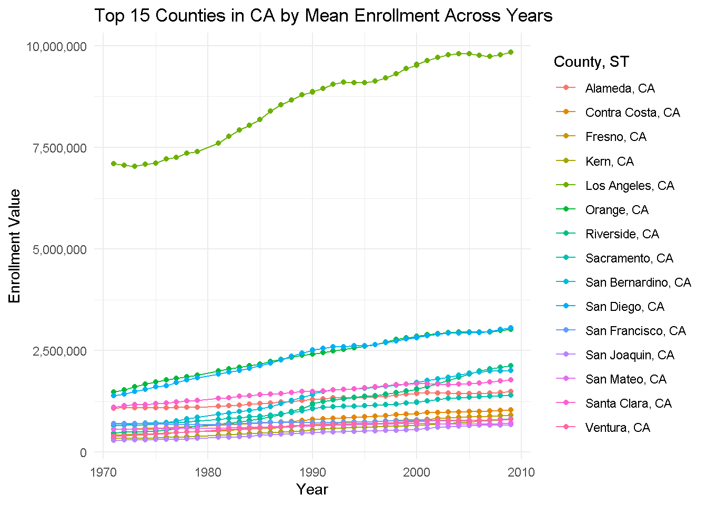
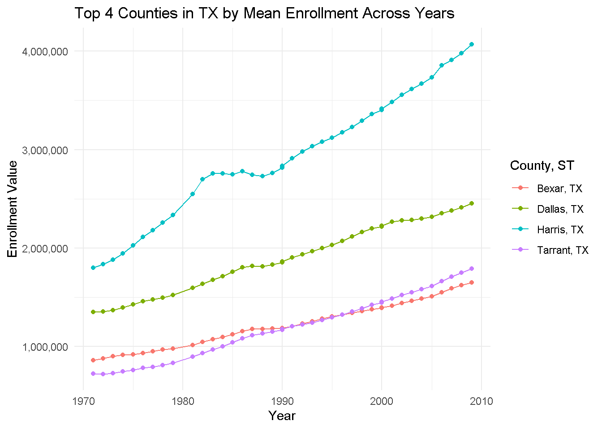
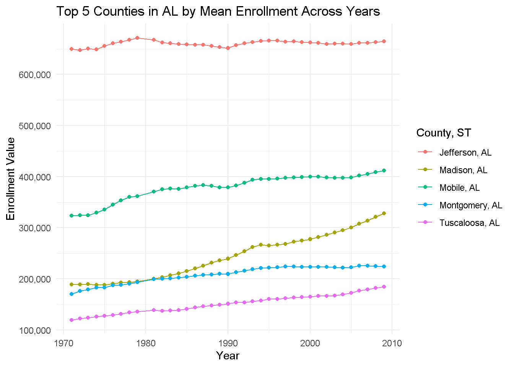

This quarto doc goes over the data processing, combining, and visualization steps undertaken for Project 1 of ST 558. This project involves analyzing educational enrollment data across various geographic areas and years.
Data Processing Functions
The process_data_step_1_2 function selects columns (Area_name, STCOU, and columns ending with “D”) and reshapes the data using pivot_longer to a more convenient tidy format for further analysis. The function process_data_step_3 extracts the year from the “Item ID” column, converting two-digit years to full years like 1986 or 2000 for example. It also categorizes data based on the measurement type by using the sub string function to pull out the first 7 characters from the Item ID column. The process_data_step_5 function adds a new column called state_abbr to the county_data data set which is pulled from a sub string of the column area_name. The process_data_step_6 function adds a new column called division which is based off a row’s area_name value. This area_name value determines the division value for that row or for which division of the country that state is located. The combined function process_data_step_4_5_6 splits the processed data into county and non-county data sets in step 4 based on the presence of state abbreviations in area_name. It then assigns class attributes and categorizes non-county areas into divisions. The my_wrapper function reads in the data and pulls all those functions stated above together into one singular function.
# load in necessary packageslibrary(tidyverse)
Warning: package 'tidyverse' was built under R version 4.2.3
Warning: package 'ggplot2' was built under R version 4.2.3
Warning: package 'tibble' was built under R version 4.2.3
Warning: package 'tidyr' was built under R version 4.2.3
Warning: package 'readr' was built under R version 4.2.3
Warning: package 'purrr' was built under R version 4.2.3
Warning: package 'dplyr' was built under R version 4.2.3
Warning: package 'stringr' was built under R version 4.2.3
Warning: package 'forcats' was built under R version 4.2.3
Warning: package 'lubridate' was built under R version 4.2.3
── Attaching core tidyverse packages ──────────────────────── tidyverse 2.0.0 ──
✔ dplyr 1.1.4 ✔ readr 2.1.5
✔ forcats 1.0.0 ✔ stringr 1.5.1
✔ ggplot2 3.5.1 ✔ tibble 3.2.1
✔ lubridate 1.9.3 ✔ tidyr 1.3.1
✔ purrr 1.0.2
── Conflicts ────────────────────────────────────────── tidyverse_conflicts() ──
✖ dplyr::filter() masks stats::filter()
✖ dplyr::lag() masks stats::lag()
ℹ Use the conflicted package (<http://conflicted.r-lib.org/>) to force all conflicts to become errors
library(tools)library(scales)
Warning: package 'scales' was built under R version 4.2.3
Attaching package: 'scales'
The following object is masked from 'package:purrr':
discard
The following object is masked from 'package:readr':
col_factor
# function for steps 1 & 2process_data_step_1_2 <-function(data, value_column ="Enrollment") { processed_data <- data |>select(area_name = Area_name, STCOU, ends_with("D")) |>pivot_longer(cols =3:12, names_to ="Item ID", values_to = value_column) return(processed_data)}# function for step 3process_data_step_3 <-function(processed_data) { processed_data <- processed_data |>mutate(year =as.numeric(substr(`Item ID`, 8,9)), year =case_when( year <20~2000+ year, # convert years like 00-19 to 2000-2019 year >=20& year <=99~1900+ year # convert years like 20-99 to 1920-1999 ),measurement_type =substr(`Item ID`, 1, 7) )return(processed_data)}# function for step 5process_data_step_5 <-function(county_data) { county_data <- county_data |>mutate(state_abbr =substr(area_name, nchar(area_name) -1, nchar(area_name)))return(county_data)}# function for step 6process_data_step_6 <-function(non_county_data) { non_county_data <- non_county_data |>mutate(division =case_when( area_name %in%c("UNITED STATES") ~"ERROR", area_name %in%c("CONNECTICUT", "MAINE", "MASSACHUSETTS", "NEW HAMPSHIRE", "RHODE ISLAND", "VERMONT") ~"New England", area_name %in%c("NEW JERSEY", "NEW YORK", "PENNSYLVANIA") ~"Middle Atlantic", area_name %in%c("ILLINOIS", "INDIANA", "MICHIGAN", "OHIO", "WISCONSIN") ~"East North Central", area_name %in%c("IOWA", "KANSAS", "MINNESOTA", "MISSOURI", "NEBRASKA", "NORTH DAKOTA", "SOUTH DAKOTA") ~"West North Central", area_name %in%c("DELAWARE", "FLORIDA", "GEORGIA", "MARYLAND", "NORTH CAROLINA", "SOUTH CAROLINA", "VIRGINIA", "WEST VIRGINIA") ~"South Atlantic", area_name %in%c("ALABAMA", "KENTUCKY", "MISSISSIPPI", "TENNESSEE") ~"East South Central", area_name %in%c("ARKANSAS", "LOUISIANA", "OKLAHOMA", "TEXAS") ~"West South Central", area_name %in%c("ARIZONA", "COLORADO", "IDAHO", "MONTANA", "NEVADA", "NEW MEXICO", "UTAH", "WYOMING") ~"Mountain", area_name %in%c("ALASKA", "CALIFORNIA", "HAWAII", "OREGON", "WASHINGTON") ~"Pacific" ) )return(non_county_data)}# function for step 4,5,6process_data_step_4_5_6 <-function(processed_data) { county_data <- processed_data |>filter(grepl(", \\w\\w", area_name)) non_county_data <- processed_data |>filter(!grepl(", \\w\\w", area_name))class(county_data) <-c("county", class(county_data))class(non_county_data) <-c("state", class(non_county_data)) county_data <-process_data_step_5(county_data) non_county_data <-process_data_step_6(non_county_data)return(list(county_data = county_data, non_county_data = non_county_data))}# wrapper functionmy_wrapper <-function(url, default_var_name ="Enrollment") { data <-read_csv(url) result <-process_data_step_1_2(data, value_column = default_var_name) |>process_data_step_3() |>process_data_step_4_5_6()return(result)}
Combining Data Functions
The combine_results function merges data from multiple sources into county and non-county data sets. This ensures we are able to adjust the scope of our analysis at the state or regional level.
# URLs for the CSV filesurl1 <-"https://www4.stat.ncsu.edu/~online/datasets/EDU01a.csv"url2 <-"https://www4.stat.ncsu.edu/~online/datasets/EDU01b.csv"# call my_wrapper function for both URLsresult1 <-my_wrapper(url1)
Rows: 3198 Columns: 42
── Column specification ────────────────────────────────────────────────────────
Delimiter: ","
chr (22): Area_name, STCOU, EDU010187N1, EDU010187N2, EDU010188N1, EDU010188...
dbl (20): EDU010187F, EDU010187D, EDU010188F, EDU010188D, EDU010189F, EDU010...
ℹ Use `spec()` to retrieve the full column specification for this data.
ℹ Specify the column types or set `show_col_types = FALSE` to quiet this message.
result2 <-my_wrapper(url2)
Rows: 3198 Columns: 42
── Column specification ────────────────────────────────────────────────────────
Delimiter: ","
chr (22): Area_name, STCOU, EDU010197N1, EDU010197N2, EDU010198N1, EDU010198...
dbl (20): EDU010197F, EDU010197D, EDU010198F, EDU010198D, EDU010199F, EDU010...
ℹ Use `spec()` to retrieve the full column specification for this data.
ℹ Specify the column types or set `show_col_types = FALSE` to quiet this message.
# function to combine two sets of tibblescombine_results <-function(result1, result2) { combined_county_data <-bind_rows(result1$county_data, result2$county_data) combined_non_county_data <-bind_rows(result1$non_county_data, result2$non_county_data)return(list(county_data = combined_county_data, non_county_data = combined_non_county_data))}combined_results <-combine_results(result1, result2)# access the combined tibblescombined_county_data <- combined_results$county_datacombined_non_county_data <- combined_results$non_county_datacombined_county_data
# A tibble: 62,900 × 7
area_name STCOU `Item ID` Enrollment year measurement_type state_abbr
<chr> <chr> <chr> <dbl> <dbl> <chr> <chr>
1 Autauga, AL 01001 EDU010187D 6829 1987 EDU0101 AL
2 Autauga, AL 01001 EDU010188D 6900 1988 EDU0101 AL
3 Autauga, AL 01001 EDU010189D 6920 1989 EDU0101 AL
4 Autauga, AL 01001 EDU010190D 6847 1990 EDU0101 AL
5 Autauga, AL 01001 EDU010191D 7008 1991 EDU0101 AL
6 Autauga, AL 01001 EDU010192D 7137 1992 EDU0101 AL
7 Autauga, AL 01001 EDU010193D 7152 1993 EDU0101 AL
8 Autauga, AL 01001 EDU010194D 7381 1994 EDU0101 AL
9 Autauga, AL 01001 EDU010195D 7568 1995 EDU0101 AL
10 Autauga, AL 01001 EDU010196D 7834 1996 EDU0101 AL
# ℹ 62,890 more rows
combined_non_county_data
# A tibble: 1,060 × 7
area_name STCOU `Item ID` Enrollment year measurement_type division
<chr> <chr> <chr> <dbl> <dbl> <chr> <chr>
1 UNITED STATES 00000 EDU010187D 40024299 1987 EDU0101 ERROR
2 UNITED STATES 00000 EDU010188D 39967624 1988 EDU0101 ERROR
3 UNITED STATES 00000 EDU010189D 40317775 1989 EDU0101 ERROR
4 UNITED STATES 00000 EDU010190D 40737600 1990 EDU0101 ERROR
5 UNITED STATES 00000 EDU010191D 41385442 1991 EDU0101 ERROR
6 UNITED STATES 00000 EDU010192D 42088151 1992 EDU0101 ERROR
7 UNITED STATES 00000 EDU010193D 42724710 1993 EDU0101 ERROR
8 UNITED STATES 00000 EDU010194D 43369917 1994 EDU0101 ERROR
9 UNITED STATES 00000 EDU010195D 43993459 1995 EDU0101 ERROR
10 UNITED STATES 00000 EDU010196D 44715737 1996 EDU0101 ERROR
# ℹ 1,050 more rows
Generic Functions
Plotting Functions
The plot.state function visualizes mean enrollment values across years by division (region in country). The plot.county function visualizes the enrollment values over years of a specified number of top or bottom counties based on mean enrollment values with the specified number and state based on user input. In simple terms, it is used look at enrollment variation of different counties in a single state over time.
plot.state <-function(df, var_name ="Enrollment") { df <- df |>filter(division !="ERROR") |>group_by(year, division) |>summarize(mean_value =mean(get(var_name), na.rm =TRUE))# plottingggplot(df, aes(x = year, y = mean_value, group = division, color = division)) +geom_line() +geom_point() +scale_y_continuous(labels = scales::comma_format()) +labs(title ="Mean Enrollment Across Years by Division",x ="Year", y ="Mean Enrollment Value", color ="Division") +theme_minimal()}plot.county <-function(df, state ="AL", top_bottom ="top", num_counties =5, var_name ="Enrollment") {# filtering data by state input parameter df <- df |>filter(state_abbr == state)# overall mean of statistic calculation mean_value <- df |>group_by(area_name)|>summarize(mean_stat =mean(get(var_name), na.rm =TRUE))# filtering data based on top_bottomif (top_bottom =="top") { tops <- mean_value |>arrange(desc(mean_stat)) |>slice_head(n = num_counties) } else { tops <- mean_value |>arrange(mean_stat) |>slice_head(n = num_counties) } df_plot <- df |>filter(area_name %in% tops$area_name)# plottingggplot(df_plot, aes(x = year, y = Enrollment, color = area_name)) +geom_line() +scale_y_continuous(labels = scales::comma_format()) +labs(title =paste(toTitleCase(top_bottom), num_counties, "Counties in", state, "by Mean Enrollment Across Years"), x ="Year", y ="Enrollment Value", color ="County, ST") +geom_point() +theme_minimal()}
Putting it all together
The document concludes by demonstrating the application of the functions above on real-life datasets with the first two dealing with enrollment statistics and the next four dealing with resident total population estimates. It combines and visualizes data across a number of different states and regions, showing the versatility of these functions in analyzing educational and population trends.
# URLs for the first set of CSV filesurl1 <-"https://www4.stat.ncsu.edu/~online/datasets/EDU01a.csv"url2 <-"https://www4.stat.ncsu.edu/~online/datasets/EDU01b.csv"# call my_wrapper function for both URLsresult1 <-my_wrapper(url1)
Rows: 3198 Columns: 42
── Column specification ────────────────────────────────────────────────────────
Delimiter: ","
chr (22): Area_name, STCOU, EDU010187N1, EDU010187N2, EDU010188N1, EDU010188...
dbl (20): EDU010187F, EDU010187D, EDU010188F, EDU010188D, EDU010189F, EDU010...
ℹ Use `spec()` to retrieve the full column specification for this data.
ℹ Specify the column types or set `show_col_types = FALSE` to quiet this message.
result2 <-my_wrapper(url2)
Rows: 3198 Columns: 42
── Column specification ────────────────────────────────────────────────────────
Delimiter: ","
chr (22): Area_name, STCOU, EDU010197N1, EDU010197N2, EDU010198N1, EDU010198...
dbl (20): EDU010197F, EDU010197D, EDU010198F, EDU010198D, EDU010199F, EDU010...
ℹ Use `spec()` to retrieve the full column specification for this data.
ℹ Specify the column types or set `show_col_types = FALSE` to quiet this message.
# combine resultscombined_results <-combine_results(result1, result2)# access the combined tibblescombined_county_data <- combined_results$county_datacombined_non_county_data <- combined_results$non_county_data# plotting state dataplot.state(combined_non_county_data)
`summarise()` has grouped output by 'year'. You can override using the
`.groups` argument.

# plotting county dataplot.county(combined_county_data, state ="NC", top_bottom ="top", num_counties =20)

plot.county(combined_county_data, state ="SC", top_bottom ="bottom", num_counties =7)

plot.county(combined_county_data)

plot.county(combined_county_data, state ="PA", top_bottom ="top", num_counties =8)

# URLs for the additional CSV filesurl3 <-"https://www4.stat.ncsu.edu/~online/datasets/PST01a.csv"url4 <-"https://www4.stat.ncsu.edu/~online/datasets/PST01b.csv"url5 <-"https://www4.stat.ncsu.edu/~online/datasets/PST01c.csv"url6 <-"https://www4.stat.ncsu.edu/~online/datasets/PST01d.csv"# call my_wrapper function for all URLsresult3 <-my_wrapper(url3)
Rows: 3198 Columns: 42
── Column specification ────────────────────────────────────────────────────────
Delimiter: ","
chr (22): Area_name, STCOU, PST015171N1, PST015171N2, PST015172N1, PST015172...
dbl (20): PST015171F, PST015171D, PST015172F, PST015172D, PST015173F, PST015...
ℹ Use `spec()` to retrieve the full column specification for this data.
ℹ Specify the column types or set `show_col_types = FALSE` to quiet this message.
result4 <-my_wrapper(url4)
Rows: 3198 Columns: 42
── Column specification ────────────────────────────────────────────────────────
Delimiter: ","
chr (22): Area_name, STCOU, PST025182N1, PST025182N2, PST025183N1, PST025183...
dbl (20): PST025182F, PST025182D, PST025183F, PST025183D, PST025184F, PST025...
ℹ Use `spec()` to retrieve the full column specification for this data.
ℹ Specify the column types or set `show_col_types = FALSE` to quiet this message.
result5 <-my_wrapper(url5)
Rows: 3198 Columns: 42
── Column specification ────────────────────────────────────────────────────────
Delimiter: ","
chr (22): Area_name, STCOU, PST035191N1, PST035191N2, PST035192N1, PST035192...
dbl (20): PST035191F, PST035191D, PST035192F, PST035192D, PST035193F, PST035...
ℹ Use `spec()` to retrieve the full column specification for this data.
ℹ Specify the column types or set `show_col_types = FALSE` to quiet this message.
result6 <-my_wrapper(url6)
Rows: 3198 Columns: 42
── Column specification ────────────────────────────────────────────────────────
Delimiter: ","
chr (22): Area_name, STCOU, PST045200N1, PST045200N2, PST045201N1, PST045201...
dbl (20): PST045200F, PST045200D, PST045201F, PST045201D, PST045202F, PST045...
ℹ Use `spec()` to retrieve the full column specification for this data.
ℹ Specify the column types or set `show_col_types = FALSE` to quiet this message.
# combine resultscombined_results2 <-combine_results(combine_results(result3, result4), combine_results(result5, result6))# access the combined tibblescombined_county_data2 <- combined_results2$county_datacombined_non_county_data2 <- combined_results2$non_county_data# plotting state dataplot.state(combined_non_county_data2)
`summarise()` has grouped output by 'year'. You can override using the
`.groups` argument.

# plotting county dataplot.county(combined_county_data2, state ="CA", top_bottom ="top", num_counties =15)

plot.county(combined_county_data2, state ="TX", top_bottom ="top", num_counties =4)

plot.county(combined_county_data2)

plot.county(combined_county_data2, state ="NY", top_bottom ="top", num_counties =10)